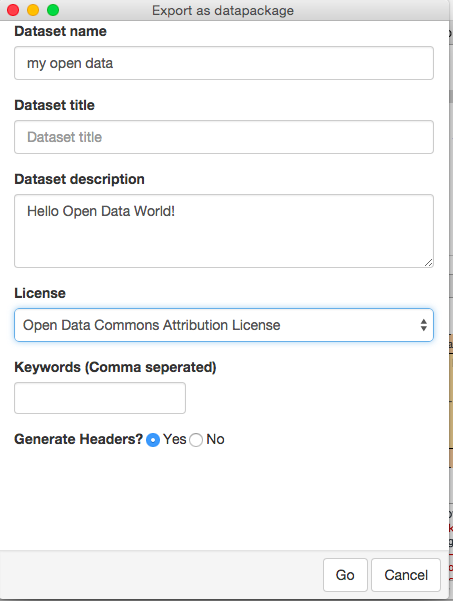
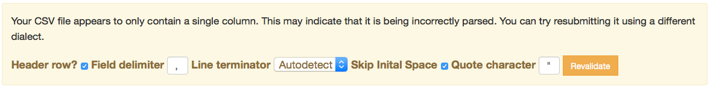
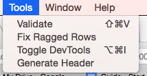

For the most recent Innovation Week the ODI Labs team and their current cohort of interns decided to prototype a CSV editing spreadsheet app.
The app – which, after some internal discussion, we decided to call Comma Chameleon – grew out of some blue-sky thinking for possible Innovation Week projects that the Labs team conducted at a recent ODI team offsite.
As this was the last Innovation Week where all three of the fresh-faced Labs interns would be present, we wanted to work on something from start to finish, to appreciate just how the Labs team prototypes a concept to something tangible.
Part of our intern mentorship included a crash course in how to define the deliverables of our project. This tuition helped us to break down the idea into a collection of discreet tasks. We added these to our project management board (we used waffle.io, for the curious among you). ODI web developer Stuart Harrison had worked on prior iterations of CSVlint, and he provided a concrete use case that had arisen during the early days of CSV validation.
With this guiding example in mind we decided our end-user was someone who works with data, needs to publish it in an approved format and would like an app that makes editing and publishing a RFC compliant CSV file as painless as possible.
Many of the rationales that had driven the development of CSVlint.io continued to exert influence on Comma Chameleon's prerogatives. Spreadsheet editing is a ubiquitous task in local government and scientific sectors, and the CSV file format is under standardisation by the World Wide Web Consortium (W3C). As a minimum viable product (MVP) we wanted to ship a standalone editor that opens and saves CSV files, and can validate a file against the CSVLint API.
You can check out the fruits of our labour here and let us know how well you think we got on. The ultimate ambition with Comma Chameleon is to provide software that anyone would feel comfortable composing CSV data files in.
I know what you’re thinking: it’s a tall order to prise someone away from their favoured spreadsheet editing software. That’s where Electron shines: it’s an incredibly fast way to get a desktop application up and running and it lets you start focusing on the user experience immediately.
Electron is a solution for creating cross-platform desktop applications using web technologies (Javascript, HTML and CSS). It’s the engine underneath Github's popular (and open source) text editor Atom, as well as driving some powerful (albeit closed source) software such as Slack and Microsoft’s forthcoming (free!) Visual Studio IDE for Mac and Linux. You can consider it a web technologies riff on Java’s ‘write once, run anywhere’ ethos.
Electron.js is new, but there is a lot of enthusiasm around it. There are some solid quick-start guides that demonstrate the power of what you can build (take for instance this tutorial that shows you have to build a drum machine in Electron) and a growing community who maintain curated lists of how-tos, useful libraries and exemplary projects.
Armed with Electron we set out to build a desktop intermediary between our data publisher user base and the existing CSVlint validation API. The heavy lifting of CSV parsing and RFC compliant feedback is all handled by the API and, as such, most of our challenge was thinking about how that useful information could be visually presented in a sensible and helpful way for the user.
Diving into a Javascript program meant that we were all contending with the unfamiliar: a strange syntax; a new landscape of libraries to lean on; and a different event-driven paradigm appropriate to designing a GUI. Thankfully, pair programming helped us to avoid a blind descent into callback hell. Along the way we learned that there is already an impressive infrastructure of Javascript libraries that handles the parsing and processing of CSV data.
Our efforts were aided by the impressive Hands On Table javascript library. This tool makes editing spreadsheets with Javascript a total breeze; the addition of the jQuery CSV parse library was all we needed to have a simple CSV editor up and running in Electron.
Not all aspects of CSVlint.io have been incorporated into the prototype. The website provides a way to include a schema (a list of descriptive metadata that enhances the utility of your data). Comma Chameleon doesn’t (yet) support schema validation, but it does include a tidy wizard that helps you auto-generate a schema, tailored to your data file.
As well as schema generation, the data package wizard also generates a zip file that includes a descriptive metadata file.

This enables you to publish your data with all the metadata bells and whistles required for an open data release. It’s possible to see a future Comma Chameleon release incorporating Lab's Git Data Publisher.
Working on a desktop interface to CSVlint’s functionality has raised interesting questions about the status of CSVlint itself. For instance, we currently provide some interactivity on CSVlint.io for users who submit CSVs in non-standard formats (e.g. semi-colon ';' separated data) where they are provided with a quick-fix solution via the dialect checker.

When hosting that functionality on a desktop app we can catch errors as soon as the file is opened. For example, we have a ragged rows auto-correct feature, which auto-corrects missing columns in data:

Comma Chameleon was a collaborative learning exercise for the Labs interns, so we collectively divulge what we’ve learned here. Electron is great/fantastic for getting things up and running but is still pretty nascent (for instance, a comparable cross platform JS solution nw.js has a more user friendly wiki in place when it comes to documentation. Fortunately there is a lot of community discussion on the Discuss board and a lot can be deduced with some detective work.
We made a collective decision to focus on feature completion rather than robust application design. There is no documentation on how to test applications built with Electron, and we struggled to work out how to do it in the time available. The experience of delivering a minimal viable product within the bounds of Innovation Week imparted/underscored that Test Driven Development, though a best practice, is not really universally “enforceable” – it can be contingent on the tools and time available.
Ensuring all contributing devs had the same vision would have helped the development process, to make sure everyone’s image of the end product stayed in sync. We’re all slowly learning the Agile process as we spend time at the ODI, and it seems like features of that approach (stand up, constant conferring on the sprint board, pairing on issues/tickets before kicking them off) would have been beneficial.
Clarifying the vision for Comma Chameleon is essential for all of us as we look to the future of what the application can be. An important question is asked of the app in retrospect: CSVlint returns warnings, hints and info messages that pertain to ‘data cleaning’ (the sort of operations also handled by tools like Open Refine), but the spreadsheet representation of a CSV file occludes such formatting errors (like the delimiters mentioned earlier). This suggests itself as an interesting user experience challenge.
At the ODI Open Data in the Day training we learned that when it comes to attaining the 5 star rating (a metric for publishing data) it is preferable to publish both a CSV and an .XLS(X) file. The reason being that the CSV is machine readable and thus favourable to the reuse of published data, but the .XLSX (or similar) provides valuable information about how human users are employing the data contained within the spreadsheet. Macros, formulas and infographics impart context that is just as relevant to understanding how a given dataset is employed and consumed.
This experience has provided us with valuable working insight with which to return to some of the original CSVlint specifications with a different vantage point. At the same time it’s made us all attentive to what we as programmers take for granted when confronting file formats, and what we might need to know of the mindset (and needs) of the average data publisher.
We’d all like to see Comma Chameleon become a functional addition to the suite of existing Labs projects. The most pressing change we all want to implement is to find a way to reduce calls to the API. Tools such as ‘Travelling Ruby’ may help us address that by including the CSVlint Ruby gem within Comma Chameleon.
Besides that, we all concur on the necessity of encouraging the ODI to formerly adopt the Comma Chameleon as a mascot!
Stephen Fortune is an R&D intern at the ODI. Follow @stephenfortune on Twitter.
If you have ideas or experience in open data that you'd like to share, pitch us a blog or tweet us at @ODIHQ.